jQuery中的AjaxPage2
关键词：Ajax jQuery php
$.get()和$.post()方法
$.get()和$.post()方法是jQuery中的全局函数，在此之前讲的jQuery方法都是对jQuery对象进行操作的
1.$.get()方法
结构：$.get（url，[.data]，[.callback]，[type]）
1.在phpstorm中新建工程（集成开发环境的配置）
新建Server.php，书写服务器端代码
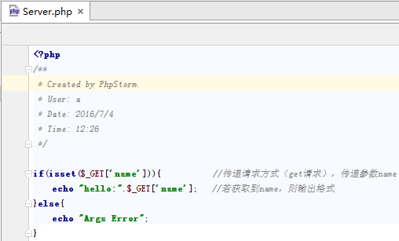然后配置服务器，File->Default Settings->PHP->指定当前服务器->Apply->OK
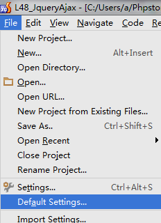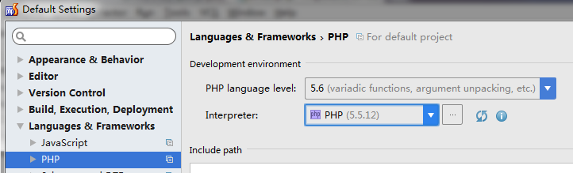
创建一个服务，添加一个PHP WebServer，设置Name、端口、Document Root等参数，点击Apply->OK
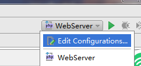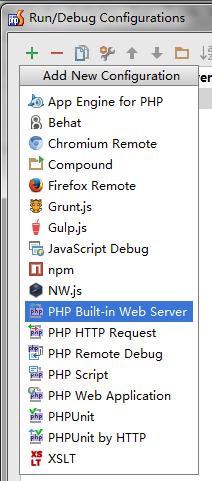
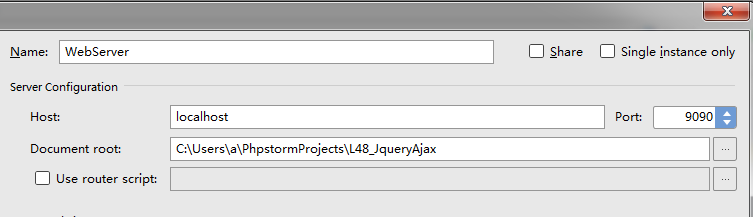
启动服务器执行，更改端口号，直接执行当前php文件
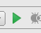 -> 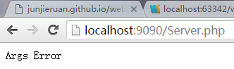2.建立html,js等文件进行异步访问
新建一个空白页ajaxindex.html。id为"namevalue"的input输入框用来获取 输入框内容并进行访问，button按钮用来触发Ajax事件，id为"result"的元素用来显示结果
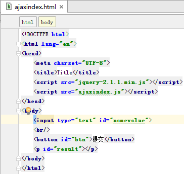新建一个js页面ajaxindex.js。点击触发后发送
$.get()请求（请求名需和服务器端GET一致）。
根据结构：$.get（url，[.data]，[.callback]，[type]），
url为服务器名，data获取的数据以发送到服务器（name和服务器匹配对应），回调函数callback监听返回事件（传参data传递数据）并显示。
*此js文件中通过GET请求访问传递一个参数data，同时获取服务器返回的这个参数（通过回调函数）显示在html上
执行，观察异步访问结果
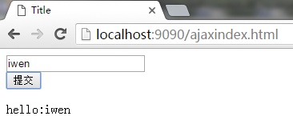3.data参数和上页例子相同
4.回调函数
$.get()方法的回调函数只有两个参数
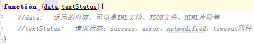*回调函数只有当数据成功返回（success）后才被调用，与 load()方法不同
5.数据格式(type)
服务器返回的数据可以有多种，包括HTML片段、XML文档、JSON文件等
1.HTML片段
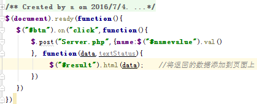
HTML片段可不经过处理直接插入主页面
2.JSON文件
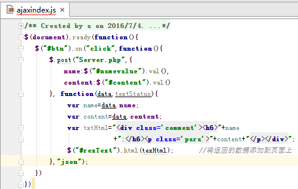
服务器端返回数据格式是JSON文件，需处理再添加到主页面。上面代码中第4个参数(type)设置为"json"来代表希望服务端返回的数据格式
2.$.post()方法
将服务器Server.php和ajaxindex.html中的get改为post即可